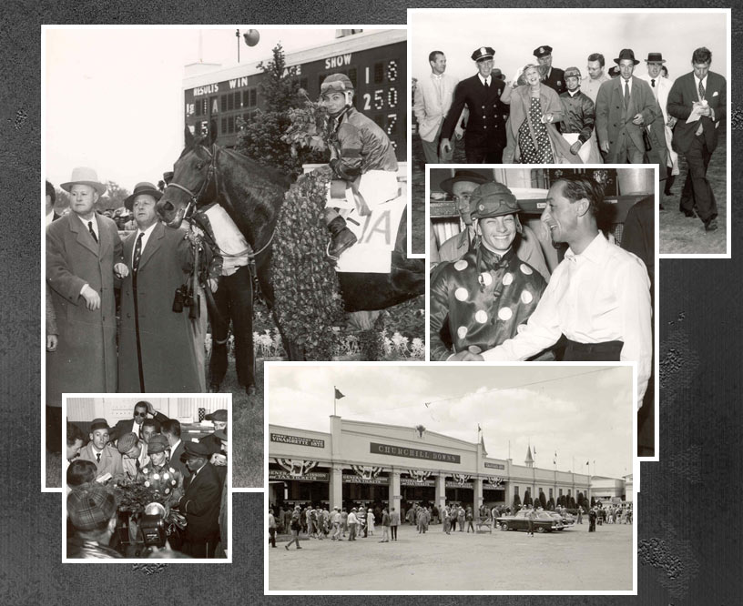
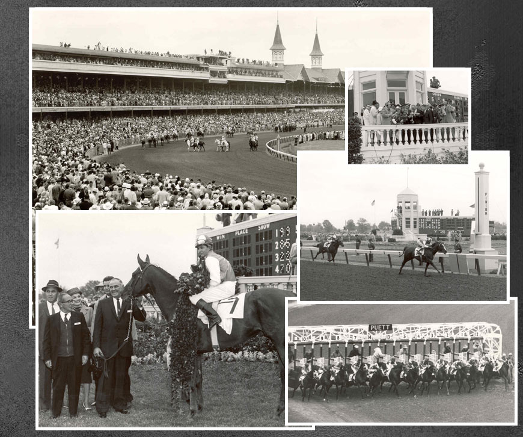
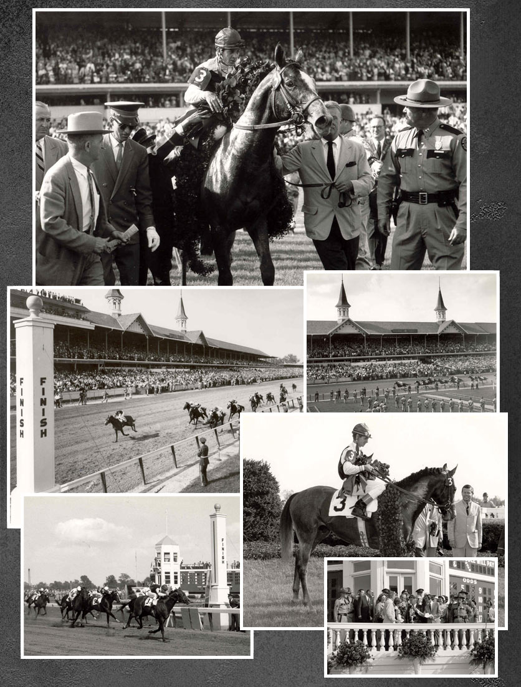
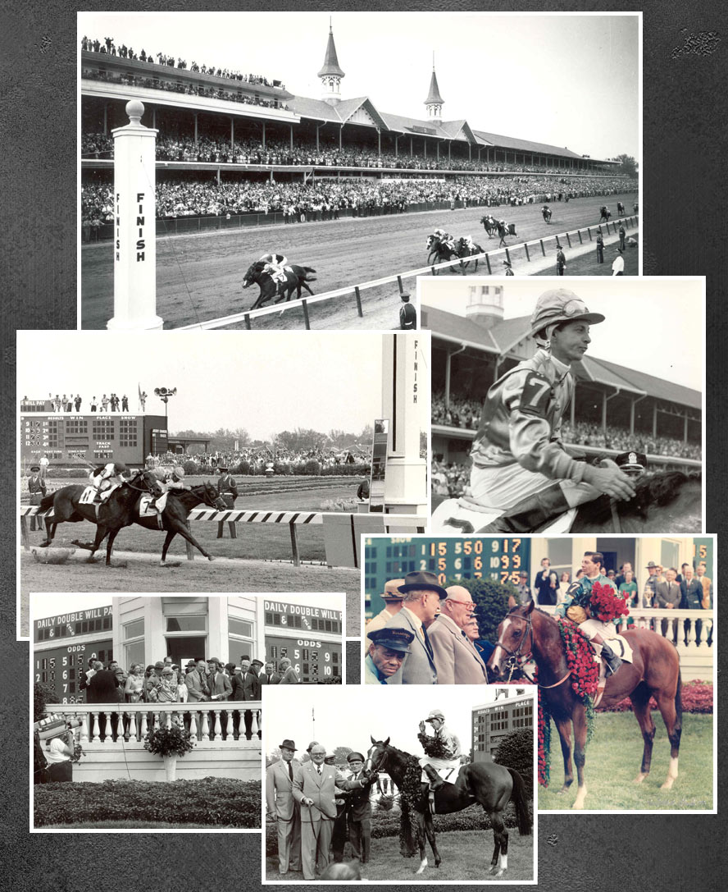
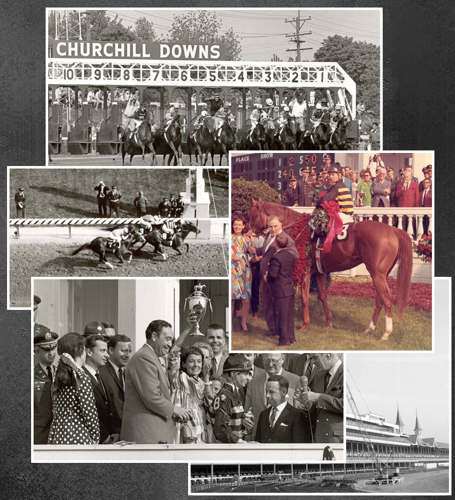

In any other year, Iron Liege would have been an imposing favorite in the Kentucky Derby. But 1957 was no ordinary year, a year of plenty in a generation of three-year-olds that viewed now, in the context of a half-century of perspective, may have been the most deeply talented in history.
He was by Bull Lea, from a mare by War Admiral, named Iron Maiden. From this fateful mating, he inherited his maternal grandfather’s speed. and his maternal grandfather, himself a son of none other than Man o’ War, was the fourth winner of the Triple Crown two decades earlier while running his overmatched opponents off their feet in Louisville, Baltimore and New York. Yet among those who were expected to face the starter in the 83rd running of the Derby, Iron Liege was regarded as a pacemaker for stablemate Gen. Duke, the favorite in perhaps the strongest field ever assembled at the threshold of the Triple Crown.
A wealth of three-year-old talent of this magnitude beneath the colors of a single owner is unimaginable nowadays. In those days, it could happen only in the resplendently purple genetic pool in residence at Calumet Farm, but racing does not spare even its legends the occasional detour;, the strange twist of fate on Derby Day. Trainer Ben Jones found Gen. Duke injured that morning and was forced to declare the favorite scratched. In his absence, the great Bold Ruler, a most- worthy successor, ascended to the favorite’s pedestal at 6-5 with living legend Eddie Arcaro in the stirrups. Round Table and Gallant Man were next, both at slightly more than 5-2. Iron Liege, at more than 8-1 in a field of nine, was dismissed as a rabbit without a mission, just behind Federal Hill with four others written off as rank longshots.
1957 Iron Liege
The task of setting the table for his stablemate no longer the afternoon’s assignment, Iron Liege was rated just off the pace, a threat at every stride for a mile. The War Admiral and Man o’ War blood combined with his Calumet heritage was manifesting itself in Iron Liege when an upwardly mobile young jockey, riding in only his second Kentucky Derby, sent him after Federal Hill and turned a stalking trip into a narrow lead leaving the quarter pole.
Behind Iron Liege, the English-bred Gallant Man, having been reserved well behind the early pace, was in determined pursuit beneath Bill Shoemaker, by then a Derby veteran with a victory in 1955 aboard Swaps on his resume. At the eighth pole, Gallant Man was at Iron Liege’s flank and bearing down.
Amidst the rising heat of battle, with Gallant Man and Iron Liege on even terms, Shoemaker stood up, mistaking the sixteenth pole for the final post. It was a brief interruption of Gallant Man’s long, fluid stride; the blink of an eye, but it was the difference in a nose decision that went to Iron Liege in a stretch drive that would go down in history alongside the storied fighting finish of 1933, when Don Mead and Herb Fisher flailed at one another while Brokers Tip and Head Play settled the decision in a more conventional, if no less hotly contested, manner.
William John Hartack dismounted Iron Liege, his role in a Derby that would haunt Shoemaker for years and his first winning ride having secured a place in racing history, and said only: “This son of a gun can really run.”
Bill Hartack, even then, addressed the racing press (if he addressed them at all) through a curt sneer without inclination to fulfill dutifully the obligations of celebrity. “I admire the racing writers,” he once said with unveiled contempt. “It must be tough to write about something you know nothing about.”
He viewed the world and most with whom he grudgingly shared the planet from behind a stone wall. Hartack was described at various times as obstreperous, bad-tempered, defiant, quarrelsome, fractious, confrontational and, if only in the flush of an important victory, charming and gregarious. In an age when athletes were polite to a fault, Hartack would be considered rude even by today's standards.
1960 Venetian Way
He had no friends among fellow jockeys and few in the racing community. Yet, that uncompromising, me-against- the-world loner nature may have been the source of his greatness. He enjoyed hunting and fishing, flashy cars and stylish clothes. After that, life was about winning races.
Before Hartack made his debut in the Kentucky Derby on Fabius, the runner-up to Needles in 1956, Arcaro, “The Master,” had been astride five three-year-olds who stood in the shadow of the Twin Spires draped in roses on the first Saturday of May, a record that towered above all other jockeys and to this day has been equaled only by Hartack, whose fifth victory, aboard Majestic Prince, was 39 years ago. But for misfortune, Hartack would have won a sixth Derby, but, in 1958, suffered a broken leg that cost him the mount on Tim Tam, the winner of the first two legs of the Triple Crown for Calumet that year. No active rider has partnered more than two winners of the Derby. Shoemaker rode four winners from 26 mounts. Isaac Murphy, Earl Sande, Angel Cordero Jr. and Gary Stevens retired with four Derby victories each.
The enigmatic man who would equal Arcaro’s Kentucky Derby record and come to be called by some the greatest rider of the 20th century needed only a dozen mounts to do it, nine of which came after his 1959 induction to the Racing Hall of Fame. Arcaro, in contrast, rode 21 Derby starters.
After Iron Liege, Hartack would be without a mount in the next Kentucky Derby. He won the 1960 Derby edition with Venetian Way, watched the race without a mount in 1961, won the 1962 Derby with Decidedly, did not have a mount in 1963, and won the 1964 Derby with Northern Dancer. In a span of 19 years, Hartack, though in great demand, rode in consecutive runnings of the Kentucky Derby only five times, winning his fifth, in 1969, aboard Majestic Prince after having ridden only two Derby starters in the five-year span that followed Northern Dancer’s victory.
If he missed the occasional Derby and other important races, trainers and their owners willing to forego diplomacy and weather the occasional verbal whipping sought out Hartack for his horsemanship, cunning, skill and an unbent determination. He was a brilliant tactician, had a mystical communication with the horses he rode, and possessed unflappable patience and uncanny timing that put him at the top of his profession quickly, leading the nation’s riders in his third season as a jockey, and permanently.
“My biggest problem isn't mounts, but Billy's personality,” Chick Lang, Hartack’s agent during the best years of his career and later general manager of Pimlico, told Time magazine in 1958. The story was carried in an issue that featured an unsmiling, severe portrait of Hartack on the cover. “I spend most of my time trailing around after him, apologizing to people he's insulted. He's particularly rude if he hasn't won. He's the most competitive athlete I ever saw.”
Hartack’s brilliance on horseback is a matter of record. His view of the world is a mystery that accompanied him to the grave.
1962 Decidedly
Hartack, who never married, died of a heart attack late last November as he had lived, alone. His life traversed the a full circle in 74 years from a barely heated three-room cabin in the hard-scuffle Pennsylvania soft-coal mining country to a hunting cabin in southern Texas. He may have died without ever having fully enjoyed his accomplishments. If he did, he kept it to himself.
Writer Jimmy Breslin speculated during the ‘60s that the trials of his youth may have shaped Hartack’s view of the world. Breslin wrote, in True magazine:
“The shack was on stilts so the floor wouldn’t be against the ground in wintertime. But it didn't matter because when you went out to the creek for drinking water and brought it back in a basin, the way Bill Hartack had to before dinner every night, any of it that would drip on the floor quickly turned to ice. A pot-bellied stove was the only warm thing in shack number 371 and this does not constitute a heating system, even for a tiny three-room shack. But it was all they had because Hartack’s father worked the soft coal in the mines around Colver, Pennsylvania, and there was no money in this. Nor was there much of a life in the shack. Hartack’s mother had been killed when he was seven and he had to raise his two sisters while his father dug coal. You always remember this when you tell about Bill Hartack.”
If the rough edges were not smoothed by success, neither were they softened by age. In the twilight of his career, Hartack, in 1977, accepted an offer to ride on retainer in Hong Kong for an Irish owner named Frank Carr. The relationship was tempestuous, as were his relationships with other riders there, particularly an Australian, Gary Moore, the dominant rider in Hong Kong at the time. “Before I leave, I'm going to hit that guy so hard his head is going to go through his locker and come out the other side,” Hartack told a Hong Kong writer. He left in 1980 before the threat became reality, leaving in his small apartment hundreds of unopened letters, bills and an assortment of ignored mail.
1964 Northern Dancer
When he retired after the season of 1980, Hartack had ridden 4,272 winners from 21,535 mounts, led the nation in races won four times and was the first rider to have purse earnings of $3 million in a season. His place in history was, even then, iconic.
Hartack returned to the United States and began a new career as a steward at tracks in Chicago and Louisiana. In a rare interview at The Fair Grounds with Jennie Rees, of the Louisville Courier-Journal, an aging Hartack spoke with unusual candor.
“On the race track, you're going to lose more than you win,” Hartack said. “But the point is, once you believe that and condition yourself to saying, `'Aw, well, I was supposed to lose that one,' then of course you can't win that one in between. I think the only way you can win as many times as you possibly can is to take the premise you can win them all… [I] never really had a good day at the race track - not one. "Let's put it this way, it wasn't conducive to enjoying yourself. But who cares? That was my job. . . I liked the job. I didn't enjoy it, but if I had to pick one, that was perfect. I was outdoors. I had a challenge. I loved the competition. But I was intolerable from the time I went to the race track until the races were over. "When I say it was torture, it didn't stop me from enjoying myself at night and things like that. But I had to have a buffer between my job, my profession and my social life. When the races were over, there was just no way in the world I could leave the race track and live with the human race. Impossible. So, depending on how angry I was or how unsatisfied I was or how I could wind myself down, I either went for a ride, took in a movie or went home among a few friends who didn't dare ever mention the races."
1969 Majestic Prince
When the news of his death spread from south Texas, it was accompanied by a reflective moment in every life Hartack had touched, those whose paths he had crossed, often unpleasantly but never forgettably, and those who remember him astride a racehorse, always exactly where he needed to be when he needed to be there. If he was concerned for his legacy, it is forever a part of the Hall of Fame, the history of America’s greatest races and, in the estimate of Joe Hirsch, the now retired Daily Racing Form columnist and the only writer ever close to Hartack: “ He was the best Derby rider who ever lived.”